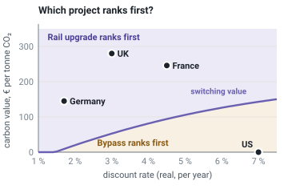

Part IV · Policy levers · Module 14
Appraisal and decision-making
Appraisal is where \(W\) meets a real decision: a ministry choosing which motorway, rail line or bus network to fund, or a city adopting a mobility plan. This module starts with a country that stopped most of its road building, and asks why its appraisals had not stopped those roads earlier. The answer is that three different objectives meet in every decision: the model's, the appraisal's and society's. We then walk through the procedure of social cost–benefit analysis, compare how national manuals carry it out, and find out which of their assumptions decide a ranking. The last sections look at what cost–benefit analysis cannot do alone. The aim is to use \(W\) honestly, as a disciplined account of trade-offs rather than a machine that outputs decisions.
- The question
- Which projects deserve public money, and does the appraisal in front of you measure what your city or country actually wants?
- What matters
- Three objectives meet in every appraisal: what the traffic model computes, how the appraisal manual values the results, and what society has decided it wants (climate laws, Vision Zero, access for all). Modern manuals already value safety, emissions and distribution. Conflicts arise where the levels disagree: a model that holds traffic fixed, a carbon price where the law sets a budget, or a study that only ever looked at road options.
- Numbers to question
- The discount rate (1.7 % in Germany, 7 % for US federal grants), the carbon value (none in US grant guidance since 2025; £280 per tonne for 2030 in the UK), the value of time, the cost and ridership forecasts (costs overrun in about nine of ten projects), and whether the forecast let traffic grow in response to the project.
- Levers
- The terms of reference: the objective, the limits and the list of options (including pricing and management). The parameter set. A rule that limits are checked before any ratio. Independent review, and publication of every input.
- Ask your analysts
- Which three assumptions drive this ranking, and at what values would it flip? Which effects are inside the benefit–cost ratio, and which are only beside it? Does the plan meet our climate and safety targets, or only "value for money"? Who checked the cost estimate against past projects?
- Distinguish the model's objective, the appraisal's objective and the societal objective, recognize where they conflict, and say what to change at each level.
- Carry out the steps of a social CBA: reference case, options, effects, monetization, discounting, appraisal period, residual value and the marginal cost of public funds. Count congestion, land and taxes once.
- Compare the appraisal frameworks of the UK, Germany, the Netherlands, Sweden, France, Japan, the US, Australia, Singapore and the EU, and identify the assumptions that drive a ranking: discount rate, time values, carbon value, treatment of taxes and public funds.
- Compute and explain a switching value.
- Explain when multi-criteria analysis and Pareto comparison are better tools than a single benefit–cost ratio.
- Apply distributional analysis and equity weights, including the UK Green Book formula.
- Place project appraisal within strategic processes such as the EU SUMP and the German Verkehrsentwicklungsplan.
- Recognize optimism bias and strategic misrepresentation, and apply reference-class forecasting.
1. Three objectives in one decision
In March 2021 the Welsh Government adopted a new transport strategy. Its targets were concrete. Car mileage per person should fall by 10 % by 2030. By 2040, 45 % of journeys should be made on foot, by bike or by public transport. Net Zero Wales followed in October 2021.
Most of the road schemes then in preparation were older than these targets. In June 2021, Lee Waters, the Deputy Minister for Climate Change, paused new road schemes and appointed a review panel. It was chaired by Lynn Sloman, a transport researcher.
The panel reported in February 2023. It found that many studies had been framed as fixes for one stretch of trunk road. They listed dozens of options, from bus services to safety measures. But the options most likely to be built were the ones the road agency could deliver: more capacity for cars. The panel also counted carbon. The 34 schemes with a costed design could emit about 500,000 tonnes of CO₂ in construction alone. About its yardstick it was blunt: journey-time savings "are an unreliable measure of value for money in the context of current Welsh Government policy priorities."
About a third of the reviewed schemes were cleared to go ahead, some in modified form. The rest were stopped or sent back to look for alternatives. The government adopted new tests: road investment should support modal shift and cut carbon, improve safety through small changes, adapt to climate change, or improve access in a way that supports modal shift.
The decision was contested. Environmental groups praised it. The leader of the Welsh Conservatives condemned it. Others asked for a transition period, because many rural areas have little public transport. A poll in summer 2023 found more people in Wales opposed the cancellations than supported them.
Sources: Roads Review Panel, The Future of Road Investment in Wales (February 2023), summary and section 7; Welsh Government response (14 February 2023); reactions and counts as summarized in Wikipedia, "Welsh Government roads review", with links to the BBC and other reports.
Nobody in this story did their job badly. The traffic models forecast flows. The appraisals valued time, safety and emissions as the guidance asked. The trouble was that three different objectives were at work, and they pointed in different directions. It helps to separate them.
- The model's objective. This is what a computer model calculates or optimizes. A traffic assignment model spreads trips over the network until no driver can save time by switching route (Module 4). A signal optimizer minimizes delay and stops (Module 9). The model's output is physical: flows, travel times, emissions, crashes.
- The appraisal's objective. This is how the predicted outcomes are valued and compared. A national manual says which effects count, at what unit price, over how many years, with which discount rate, and which decision rule applies. The UK's TAG, Germany's BVWP method, the Dutch MKBA guide, France's évaluation socio-économique, US grant guidance and Australia's ATAP are such manuals.
- The societal objective. This is what a city or country has decided it wants to become. It is written in laws, strategies and plans: climate laws, Vision Zero, a transport strategy's targets, a mobility plan (section 7).
| Level | Who sets it | Typical form | In \(W\) terms |
|---|---|---|---|
| 1. Model | Modelers, software vendors, model guidance | equilibrium, minimum delay, generalized cost | delivers the physical quantities: travel times, flows, \(E_k\), \(L\) |
| 2. Appraisal | Finance and transport ministries, through manuals | net present value, benefit–cost ratio, summary table | sets the prices \(p_k\), \(r\), \(\mu\), the time values and the discount rate |
| 3. Society | Parliaments, councils, voters | targets, laws, strategies | sets the limits (\(F\le\bar F\), \(E_{\mathrm{CO_2}}\le\bar E_{\mathrm{CO_2}}\), \(A_g\ge A_{\min}\)) and the weights \(\omega_g\) |
Modern appraisal is broader than its reputation
A common criticism says that appraisal only counts vehicle time savings. For today's main manuals, that is out of date. The UK's TAG reports impacts on the economy, the environment, society and public accounts. It values crashes, noise, air quality, greenhouse gases and physical activity, and has a full method for distributional impacts (section 6). Germany's BVWP method adds three non-monetary modules to its cost–benefit analysis: environment and nature, spatial planning (accessibility) and urban effects. France's guidance has tool sheets for health and urban effects, and a carbon value that rises over time. Sweden reports a distributional analysis and a goal analysis next to its cost–benefit result. US grant guidance values safety. These manuals are the result of decades of work by economists and engineers, much of it aimed at exactly the biases critics describe.
The problem lies less in any one level than in the joints between them.
Where the levels conflict
- Model versus appraisal: fixed demand. If the model does not let traffic grow when a road gets faster, the appraisal values time savings that will be eroded by induced traffic (Module 2, Module 5). The manual may be sound; its inputs are not. Several manuals, including the UK's, ask for models in which demand responds when a scheme changes travel costs noticeably. Small schemes and junction studies often still use fixed demand.
- Appraisal versus society: a price where the law sets a budget. An appraisal values each tonne of CO₂ at a unit price. Each scheme's emissions are small next to its time savings, so each scheme can pass. Many schemes together can still break a carbon budget. A price and a budget agree only if the price equals the budget's shadow price (Module 1). The Welsh panel made the scale tangible: to offset the 30,000 tonnes of construction emissions of one medium-sized road scheme, 2,700 average drivers would have to give up driving for ten years.
- Standards and framing versus the options. An appraisal can only rank the options it is given. If a study is defined as "fix this stretch of road", and design standards ask for a level of service for cars (Module 8), road capacity options are what reach the shortlist. This conflict happens before any valuation.
- The reverse case. Sometimes the appraisal is the stricter level. A government may fund a project with a low benefit–cost ratio for regional, symbolic or industrial reasons. An appraisal then does its most useful work: it makes the price of that choice visible.
The practical consequence for a decision maker is simple to state. Write the societal objective into the terms of reference as limits and targets. Ask for the limits to be checked before any ratio is computed. Ask for options of every kind, including pricing, management and services. And ask whether the model covers the timescale on which the effects play out. The rest of this module shows how.
2. Social cost–benefit analysis step by step
All the national manuals in this module follow the same skeleton:
- Problem and objectives. What is wrong, for whom, and which terms of \(W\) are at stake? Objectives should be outcomes (access, safety, emissions), not solutions ("build a bypass").
- Reference case. The most likely future without the project, including committed policies. The Dutch call it the nulalternatief, the French the option de référence, the Germans the Bezugsfall. A weak reference case, for example one that ignores a cheap bus improvement, inflates every option's benefits.
- Options. A long list, filtered to a short list that includes low-cost, pricing and management options as well as construction.
- Effects. Forecast demand and network performance with and without the project (Module 4), then physical effects: emissions, noise exposure, crashes, land take.
- Monetization. Apply the values of Module 2 (Term A) and Module 3 (Terms B–D). List effects that cannot be monetized.
- Discounting and aggregation over the appraisal period, including residual value and the cost of public funds (Term E).
- Uncertainty. Sensitivity tests, scenarios, switching values and optimism-bias adjustments.
- Distribution. Who gains and who loses, by income, place, age, gender, disability and mode.
- Presentation and decision. A summary table: monetized results, non-monetized impacts and distributional effects, presented to decision makers.
Count each effect once
Three effects are easy to count twice. Module 1 sets out the rules. Here is how they look in an appraisal.
- Congestion. The forecast travel times already include the delay drivers cause each other, so that delay is already in the user benefits (Term A). It must not also appear as an external cost in C. The same holds for crowding on buses and trains. The delay one driver imposes on others is still useful: it is the basis of a congestion charge (Module 13). Only an appraisal that holds travel times fixed must add it separately.
- Land. Land bought for a project can enter as a purchase price in the investment cost, or as a yearly rent in Term D. Never both. Manuals choose the first route (see below). This course puts all land in D, so that old and new road land are treated alike.
- Taxes, tolls and fares. They are transfers. Users pay them, which lowers their surplus in A. The government receives them, which lowers net public cost in E. The two cancel, except through the marginal cost of public funds \(\mu\). A toll raises welfare only by changing behavior, and through \(\mu\) when its revenue replaces distorting taxes.
How manuals treat land
Germany's BVWP puts the cost of buying land into the investment cost. At the end of the appraisal period it credits the land's value back as a residual value, on the reasoning that the land could be sold once the road or railway is removed. The UK Green Book asks that land be valued at its opportunity cost, its value in its best other use, and TAG includes land in the residual value of assets with short lives. Both are consistent: land enters once, as a cost of the project. What neither does is charge rent for land that is already under roads. That land is treated as free, which is the gap Term D fills (Module 1).
How manuals treat taxes
Manuals reach the same principle by different routes. The Green Book states that transfers "do not, in themselves, make society as a whole either better off or worse off", and allows them either to be excluded or shown as offsetting costs and benefits. TAG works in market prices, including taxes. When a scheme moves people from cars to trains, drivers save fuel duty, and TAG books the Treasury's lost fuel duty as a negative benefit. The two cancel. Germany's BVWP takes the other route: it values fuel and electricity without VAT, fuel tax and electricity tax, so the transfer never appears. France and Sweden add a cost for each euro of public money, through \(\mu\).
Discounting
A euro of benefit in thirty years counts for less than a euro today. One reason is that people prefer benefits sooner. Another is that people will probably be richer, so an extra euro will matter less to them. The discount rate \(r\) says how much less, per year. The net present value (NPV) adds up each year's benefits minus costs, each divided by \((1+r)^t\) for year \(t\). The discount rate is the single most powerful parameter in appraisal. €100 of benefit in 30 years is worth today:
| Rate | 1.7 % (Germany BVWP) | 2.8 % (Netherlands std.) | 3.0 % (UK, yrs 1–30) | 3.5 % (Sweden) | 4.0 % (Japan) | 4.5 % (France, \(\beta=1\)) | 7 % (US grants, 2025) |
|---|---|---|---|---|---|---|---|
| PV of €100 in year 30 | 60.3 | 43.7 | 41.2 | 35.6 | 30.8 | 26.7 | 13.1 |
Low rates favor long-lived investments with benefits that grow over time (rail, land-use change, climate). High rates favor quick, cheap measures. Several countries now use declining rates for distant years (UK, Netherlands), or a higher rate for benefits that rise and fall with the economy (France, Netherlands).
Appraisal period and residual value
Infrastructure lasts longer than any forecast. Manuals handle this in three ways. They use a long fixed period (UK 60 years, Sweden 60 years, Japan 50 years). They use an explicit horizon plus a formula for the residual value (France). Or they use asset-specific service lives, with residual value only for land (Germany). Residual value is a large share of NPV for long-lived assets at low discount rates, and it is easily abused. Check what it assumes about traffic growth after the forecast year.
The marginal cost of public funds E
Raising €1 of tax costs the economy more than €1, because taxes distort work and consumption. Term E multiplies net public spending by \(1+\mu\). France and Sweden apply this explicitly, both with \(1+\mu=1.2\). Germany, Japan and the US do not apply an explicit factor in their transport manuals. The UK instead puts cost to government in the denominator of its benefit–cost ratio (BCR), which plays a similar role when budgets are fixed.
Le rapport Quinet du CGSP (2013) recommande que toute variation de dépense et de recette budgétaire publique soit multipliée par un COFP de 1+µ = 1,2.
"The Quinet report of the CGSP (2013) recommends that every change in public budget expenditure and revenue be multiplied by an opportunity cost of public funds of 1 + µ = 1.2."
Source: DGITM, fiche-outil V.5, Coût d'opportunité des fonds publics et prix fictif de rareté des fonds publics (version of 1 October 2014). When budgets are rationed, France adds a further "shadow price of scarcity of public funds" of 0.05. Translated by the course authors (machine-assisted).
Sweden's ASEK 8.0 sets \(\mathrm{MCPF}=1.2\) on the basis of a 2023 review that found a plausible range of 1.11–1.25. It books the excess as a negative benefit called skattefinansieringskostnad (tax-financing cost): \(0.2\times\) public expenditure. The notation of \(W\) is exactly the French one.
Two options with present values in € million. Here \(\Delta C\) is the change in external harm avoided: positive if the option reduces crashes, emissions or noise, negative if it adds to them. Congestion is not in \(\Delta C\); it is inside the user benefits A.
| User benefits (A) | \(\Delta C\) | Capital + O&M (K) | Revenue (R) | NPV, \(\mu=0\) | NPV, \(\mu=0.2\) | |
|---|---|---|---|---|---|---|
| X · tolled bypass | 300 | −20 | 200 | 120 | 200 | 184 |
| Y · untolled bus priority | 260 | +30 | 90 | 0 | 200 | 182 |
The NPV is \(A+\Delta C-(1+\mu)(K-R)\). The user benefits of X are already net of the tolls users pay. The same tolls appear as revenue R. Together they cancel, as a transfer should. The options tie at \(\mu=0\). With \(\mu=0.2\), the toll revenue saves some costly taxes, and X becomes marginally better. The BCRs tell a different story again: \(A/(K-R)\) is 3.75 for X and 2.9 for Y, while \((A+\Delta C)/K\) is 1.4 for X and 3.2 for Y. Always report the NPV and say which BCR definition is used.
Under the hoodDiscount formulas, declining and risk-adjusted rates, residual values, BCR definitions
The net present value
With benefits \(B_t\) and costs \(C_t\) in real terms in year \(t\), a residual value \(RV_T\) at the end of the period \(T\), and a constant rate \(r\):
$$\mathrm{NPV}=\sum_{t=0}^{T}\frac{B_t-C_t}{(1+r)^t}+\frac{RV_T}{(1+r)^T}.$$With a schedule of rates \(r_1, r_2, \dots\), each year's discount factor is the product \(\prod_{i\le t}(1+r_i)^{-1}\).
Where the rate comes from
The rate is usually justified by the Ramsey formula \(r=\delta+\eta g\). Here \(\delta\) is pure time preference, \(g\) is the growth rate of consumption per head, and \(\eta\) is the elasticity of marginal utility: how fast an extra euro loses value as people get richer. The UK's distributional weights use the same \(\eta\), estimated at 1.25 (section 6). The 2026 Green Book sets 3.00 % for years 1–30, 2.50 % for years 31–75 and 2.25 % from year 76. Its earlier schedule (3.5 %, 3 %, 2.5 %) still appears in the May 2025 version of TAG Unit A1.1. TAG also uses a lower rate for health effects valued directly in utility terms, because the growth part \(\eta g\) does not apply to them.
Risk-adjusted rates
France uses \(a=2.5\%+2\%\cdot\beta\). The factor \(\beta\) measures how strongly a project's net benefits move with GDP. With \(\beta=1\) the rate is 4.5 %. The Netherlands has a standard rate of 2.8 % (years 0–35) and 1.8 % (from year 36), a low rate of 2.2/1.4 % for unavoidable fixed costs, and a high rate of 4.2/2.7 % for benefits strongly tied to the economy (from 1 January 2026).
Residual values
France computes detailed benefits to 2070, then a residual value from net benefits for 2071–2140. TAG uses a standard 60-year period, includes residual values (including land) only for assets with shorter lives, and gives standard asset lives. Germany credits back land value only, for roads and railways but not waterways, because a waterway cannot be removed and the land reused.
Which BCR?
TAG defines the BCR as present value of benefits over present value of costs to the "broad transport budget". Tax revenue lost to the Treasury and costs borne by users and operators go into the benefits, not the denominator. Moving an item between numerator and denominator changes the BCR but not the NPV. That is why a ranking by BCR and a ranking by NPV can differ, as the worked example shows.
Sources: HM Treasury, The Green Book (2026), chapters 6–8; DfT, TAG Unit A1.1 (May 2025), sections 2.3, 2.5, 2.7, 2.8; BMV, Methodenhandbuch zum BVWP 2030, on land costs and residual values and on energy costs without taxes.
3. National appraisal frameworks compared
National manuals differ in two ways that matter to a decision maker. First, in what the number does: whether it decides, filters or merely informs. Second, in the assumptions that move the number. The first table covers institutions. Parameters were checked in the cited documents in October and November 2026. Rates are real.
| System | Legal / institutional basis | Core method and decision rule | Notable features and gaps |
|---|---|---|---|
| UK · HM Treasury Green Book (2026 edition) + DfT TAG | Treasury guidance binding on central government; business-case process (strategic, economic, commercial, financial, management) | Net present social value and BCR; value-for-money judgment including non-monetized impacts, distribution and risk. "The UK government does not choose projects solely on the basis of which have the highest benefit-cost ratios" | Mandatory optimism-bias adjustment; distributional weights (section 6); switching values; wider economic impacts as a sensitivity |
| Germany · BVWP 2030 (2016) (German) | Federal Transport Infrastructure Plan adopted by cabinet; project lists enacted in the Ausbaugesetze for road, rail and waterways | Four modules: A cost–benefit analysis (Nutzen-Kosten-Analyse, giving the NKV, i.e. BCR), B environmental and nature-protection assessment, C spatial planning (accessibility), D urban impacts. Projects ranked into priority categories | All project dossiers public in the PRINS project information system. New "implicit benefit" component (Module 2). Criticized for weak treatment of induced traffic and climate targets (e.g. Rothengatter for BUND, 2023) |
| Netherlands · CPB/PBL Algemene leidraad MKBA (2013) + Werkwijzer MKBA bij MIRT (2024) (Dutch) | Required for national infrastructure decisions in the MIRT program; predecessor was the OEI guide (2000); large MKBAs are often reviewed by CPB or PBL | Social CBA (MKBA) presented with non-monetized effects and distribution; no binding BCR threshold | Strong institutional independence (CPB); distribution shown "without a value judgment"; official time values for walking and cycling (Module 2) |
| Sweden · Trafikverket ASEK 8.0/8.1 + SEB (Swedish) | Agency guidance for the national transport plan; two co-equal policy goals (accessibility; safety, environment and health) | Samlad effektbedömning: (i) CBA, (ii) distributional analysis, (iii) goal analysis against the transport-policy goals. Net present value ratio (NNK) reported | Combined impact assessments (SEBs) published for each measure |
| France · Code des transports L.1511-1 to L.1511-6 (from LOTI 1982, art. 14); Instruction of 16 June 2014 and DGITM référentiel (French) | Statutory evaluation duty for large projects; Quinet report (CGSP 2013); counter-appraisal of large state-funded investments under decree 2013-1211 | Socio-economic NPV (VAN-SE) as one of three components: context and objectives, effects analysis, socio-economic analysis; results disaggregated by actor | Ex-post evaluation required; tool sheets for every effect, including health, urbanism and comfort |
| Japan · MLIT 費用便益分析マニュアル (roads, Aug. 2025) (Japanese) | Project evaluation at three stages: new-project adoption, re-evaluation and ex-post evaluation | B/C from three benefits only: travel-time savings, vehicle operating cost savings, crash reduction. Other effects may be shown separately as reference | Results for each project published in standard forms; environment and access not in core B/C |
| United States · USDOT BCA Guidance for Discretionary Grant Programs (updated yearly) | Required for competitive federal grants (e.g. BUILD/RAISE, INFRA); not for most formula-funded highway spending; metropolitan plans prepared by MPOs | BCA as one merit criterion among several; benefits typically time, operating cost, safety, emissions, residual value | VSL $13.7 million (2024); no national plan-level appraisal comparable to BVWP |
| Australia · Australian Transport Assessment and Planning Guidelines (ATAP) | Guidelines agreed by the federal, state and territory governments; Infrastructure Australia assesses nationally significant proposals | Cost–benefit analysis within a wider planning and assessment framework; positive NPV as the efficiency test | Parameters not checked here (the ATAP site could not be reached in November 2026) |
| Singapore · LTA, Land Transport Master Plan 2040 | Planning by a single statutory authority within whole-of-government land-use planning | Not published | We could not find a public appraisal manual, parameter set or project-level CBA. Decisions are justified through master-plan targets (e.g. "20-minute towns and a 45-minute city"). Effective delivery, but opaque to outside scrutiny |
| EU · DG REGIO Guide to CBA of Investment Projects (2014) and Economic Appraisal Vademecum 2021–2027 | Condition for major projects co-financed by EU cohesion funds | Financial analysis (does the project need the grant?) plus economic analysis (ENPV, ERR, BCR) with shadow prices | 2014–2020 benchmark discount rate: 5 % in cohesion countries, 3 % elsewhere; member states may set their own. Widely copied in Central and Eastern Europe |
The assumptions that move the number
The second table lists the parameters that most often decide a ranking. Time values are compared in detail in Module 2, carbon values in Module 3. Currencies and price years differ, so compare orders of magnitude, not decimals.
| System | Discount rate · period | Time values | Carbon value | Taxes and public funds |
|---|---|---|---|---|
| UK | 3.00 % yrs 1–30, 2.50 % to yr 75, 2.25 % after (Green Book 2026); 60 years | Willingness to pay; one national average for non-work trips | "Target-consistent" (cost of meeting net zero): £241 (2020), £280 (2030), £378 (2050) per tonne, 2020 prices; low and high values ±50 % (DESNZ, 2021) | Market prices; lost fuel duty counted as a negative benefit; no \(\mu\), but BCR uses cost to the transport budget |
| Germany | 1.7 %; asset-specific lives | Labor-cost and survey values, rising with trip distance | €145 per tonne (2012 prices), constant | Resource costs: energy valued without VAT and energy taxes; no \(\mu\) |
| Netherlands | 2.8 % (years 0–35), 1.8 % after; variants for risk | Stated-preference survey, by mode, including walking and cycling | Not checked here | No explicit \(\mu\) |
| Sweden | 3.5 %; 60 years | Stated-preference study; income differences removed | No separate value: built into fuel prices in the forecast | \(1+\mu=1.2\) |
| France | \(2.5\%+2\%\cdot\beta\) (4.5 % with \(\beta=1\)); to 2070 plus residual value | Meta-analysis; urban and interurban values | Shadow price of the net-zero path, rising: about €246 per tonne in 2030 (2015 prices) | \(1+\mu=1.2\) on public spending and revenue |
| Japan | 4 %; 50 years | Resource cost per vehicle | Not in the B/C ratio | No \(\mu\) |
| United States | 7 % (May 2025 update; 3.1 % in the 2024 cycle) | Share of median income | None since 2025 (federal values withdrawn) | No \(\mu\) |
| Australia | 7 % central, with tests at 4 % and 10 %: a long-standing Infrastructure Australia convention (as cited in 2014) | Not checked here | ||
Which assumptions decide a ranking?
A table of parameters does not tell a decision maker what matters for their project. A small example does. Take two projects, each costing €100 million today:
- A bypass saves €6 million of travel time a year. The savings do not grow, because new traffic fills the road. It adds 8,000 tonnes of CO₂ a year.
- A rail upgrade brings €2.5 million of user benefits in its first year. They grow by 3 % a year as the region builds around the stations. It avoids 6,000 tonnes of CO₂ a year.
Both are valued over 60 years. The numbers are illustrative, not estimates. Here is the NPV in € million for four discount rates and three carbon values:
| Discount rate | No carbon value | €150 per tonne | €300 per tonne | |||
|---|---|---|---|---|---|---|
| Bypass | Rail | Bypass | Rail | Bypass | Rail | |
| 1.7 % | 125 | 120 | 80 | 153 | 35 | 187 |
| 3.0 % | 66 | 46 | 33 | 71 | 0 | 95 |
| 4.5 % | 24 | −3 | −1 | 15 | −26 | 34 |
| 7.0 % | −16 | −44 | −33 | −31 | −50 | −19 |
The project with the higher NPV is in bold. Four lessons follow.
- The two parameters work together. Without a carbon value, the bypass wins at every rate shown. With €150 per tonne, the rail upgrade wins at every rate up to about 7 %.
- A high discount rate can reject both. At 7 % with no carbon value, both NPVs are negative. Doing nothing wins.
- The switching value is the value of a parameter at which the ranking flips. At 3 %, the rail upgrade wins once carbon is worth more than about €53 per tonne. At 7 %, it needs about €143. The chart below shows the whole line.
- Ask where your country's values sit relative to that line. If they sit far from it, the ranking is robust. If they sit close, the decision rests on a contested number, and the memo should say so.

Other parameters can be read the same way. A lower value of time shrinks the bypass's benefits most, because they are all time savings. A forecast that lets traffic grow on the bypass lowers its time savings and raises its emissions. The marginal cost of public funds penalizes both equally here, because both cost the same. In a real appraisal, the analyst should report the two or three parameters that come closest to flipping the ranking, with their switching values.
Under the hoodHow the example is computed
For a project with first-year user benefit \(b\), growth rate \(g\), yearly CO₂ change \(\Delta E\) (tonnes avoided, negative if added), carbon value \(p\), cost \(K_0\) in year 0 and period \(T=60\):
$$\mathrm{NPV}(r,p)=-K_0+\sum_{t=1}^{T}\frac{b\,(1+g)^{t-1}+p\,\Delta E}{(1+r)^t}.$$Bypass: \(b=6\), \(g=0\), \(\Delta E=-8{,}000\). Rail: \(b=2.5\), \(g=0.03\), \(\Delta E=+6{,}000\). Money in € million, so \(p\,\Delta E\) is divided by \(10^6\). The switching carbon value at a given \(r\) solves \(\mathrm{NPV}_{\text{bypass}}(r,p)=\mathrm{NPV}_{\text{rail}}(r,p)\). Because NPV is linear in \(p\), this is a single division. The example simplifies on purpose: real carbon values rise over time, which would favor the rail upgrade further, and there is no residual value, no \(\mu\) and no optimism-bias uplift.
Patterns worth noting
These are a qualitative interpretation:
- Breadth of Term C. The UK, France, Germany and the Netherlands monetize climate, noise, air pollution and crashes. Japan's road manual monetizes only crashes. US grant guidance monetizes safety and some emissions. In \(W\) terms, Japan sets \(p_k=0\) for most \(k\) in the B/C ratio and handles the environment through separate assessment. This fits Japan's reliance on rail and land use for access (Module 1), but it means Japanese road B/C ratios are not comparable with European ones.
- Discount rates span a factor of four, from 1.7 % to 7 %. As the example shows, that alone can reverse rankings between rail and road, and between building and doing nothing.
- Carbon values span from zero to several hundred euros per tonne, and rest on two different logics: damage caused, or the cost of meeting a target (Module 3). Sweden's choice to build the carbon price into fuel prices means a road project looks almost carbon-neutral in its ratio, because the forecast assumes the climate policy succeeds anyway.
- Transparency varies. Germany's PRINS and Sweden's published SEBs let anyone check a project. Singapore publishes almost nothing.
- The role of the number differs. In Germany a BCR above 1 is a formal precondition for inclusion in the plan. In the UK and the Netherlands it informs a broader judgment. In the US it is one grant criterion among several.
本マニュアルにおいては、それらの効果のうち、現時点における知見により、十分な精度で計測が可能でかつ金銭表現が可能である、「走行時間短縮」、「走行経費減少」、「交通事故減少」の項目について、[…] 便益を算出する。
"In this manual, among these effects, benefits are calculated for the items 'travel-time savings', 'reduction in vehicle operating costs' and 'reduction in traffic accidents', which, on current knowledge, can be measured with sufficient accuracy and expressed in money."
Source: MLIT Road Bureau and City Bureau, 費用便益分析マニュアル (August 2025), §1(2). The preceding sentence lists the effects left out, including driving comfort, roadside environment, disaster redundancy, exchange opportunities and induced production and employment. Translated by the course authors (machine-assisted).
En Samlad effektbedömning kommer inte fram till om en åtgärd ska genomföras eller inte men kan utgöra ett stöd i beslutsfattandet.
"A Combined Impact Assessment does not conclude whether a measure should be carried out or not, but can serve as support in decision-making."
Source: Trafikverket, Samlad effektbedömning, SEB (page updated May 2026). Translated by the course authors (machine-assisted).
Under the hoodThe German and French method texts in the original
Soweit wie möglich werden alle monetarisierbaren Wirkungseffekte in der Nutzen-Kosten-Analyse (NKA) erfasst (Modul A). Sie liefert im Ergebnis ein gesamtwirtschaftliches Nutzen-Kosten-Verhältnis (NKV) […].
"As far as possible, all effects that can be monetized are captured in the cost–benefit analysis (NKA) (module A). Its result is an economy-wide benefit–cost ratio (NKV) […]."
Source: Methodenhandbuch zum Bundesverkehrswegeplan 2030, section on the evaluation modules. The text continues that land take and protection of unfragmented areas are assessed in module B, and accessibility in module C. Translated by the course authors (machine-assisted).
Cette instruction présente le cadre général pour l'évaluation des projets de transports de l'État, de ses établissements publics et de ses délégataires, en application des dispositions des articles L. 1511-1 à L. 1511-6 du code des transports […].
"This instruction sets out the general framework for the evaluation of transport projects of the State, its public bodies and its concessionaires, in application of articles L. 1511-1 to L. 1511-6 of the Transport Code […]."
Source: Instruction du Gouvernement du 16 juin 2014 relative à l'évaluation des projets de transport, §2. The articles codify article 14 of the 1982 inland transport law (LOTI). Translated by the course authors (machine-assisted).
4. Multi-criteria analysis
Multi-criteria analysis (MCA) scores options on several criteria and combines the scores, often as a weighted sum. It is used where effects are hard to monetize, or where decision makers want to see trade-offs explicitly. Germany's BVWP modules B–D, Sweden's goal analysis and the UK's appraisal summary table are all multi-criteria elements around a cost–benefit core.
MCA has well-known pitfalls:
- Weights are implicit prices. A weight of 20 % on "environment" and 40 % on "economy" implies a rate of exchange between them that nobody has justified. With normalized scores, the implied price also depends on the range of options considered.
- Double counting. "Travel time", "accessibility" and "economic development" often measure the same benefit three times.
- Rank reversal. Adding or removing an irrelevant option can change the ranking of the others when scores are normalized.
- Scale. Scores on a 1–5 scale hide whether an effect is large or trivial.
The honest use of MCA within the \(W\) framework is narrow. Use it for effects that genuinely cannot be priced, such as heritage, landscape or community cohesion. Present it next to the monetized terms, not mixed into them. Where an effect can be measured physically, such as emissions or exposure, show the physical quantity rather than a score.
In formula form, the weighted sum is \(S_i=\sum_c w_c\,s_{ic}\): option \(i\)'s score \(s_{ic}\) on criterion \(c\), times the weight \(w_c\), added over all criteria.
5. Pareto comparison
Before using any weights, check for dominance. Plan X dominates plan Y if X is at least as good on every term of \(W\) and every limit, and strictly better on at least one. Dominated plans can be discarded without any value judgment. The rest form the Pareto frontier, named after the Italian economist Vilfredo Pareto. Only the choice among them requires prices or political weights.
Present values in € million (positive = good), and whether the safety limit \(F\le\bar F\) is met. Congestion effects are inside A; land is only in D.
| Plan | A access | B health | −C externalities | −D land | −E net cost | Safety met? |
|---|---|---|---|---|---|---|
| P1 road widening | 180 | 0 | −60 | −40 | −120 | no |
| P2 bus rapid transit | 150 | 10 | +20 | −10 | −110 | yes |
| P3 BRT + cycle network | 160 | 45 | +25 | −10 | −130 | yes |
| P4 widening + bus lane | 170 | 5 | −50 | −45 | −140 | no |
- P1 and P4 fail the safety limit and are infeasible. Note that neither dominates the other: P4 is worse on A, D and E but better on B and C. Without the limit check, both would stay in the comparison, and a high enough value of time could make P1 the "winner". This is why the limit check comes first.
- Between P2 and P3, neither dominates. P3 is better on A (+10), B (+35) and C (+5), but its net public cost is 20 higher (already including \(\mu\)). With equal weights, \(W(P3)-W(P2)=+30\). The decision rests on whether health benefits are valued as fully as access benefits.
- Report the vector, the infeasibility of P1 and P4, and the size of the P2–P3 trade-off. That is a more useful decision document than a single BCR.
6. Equity weighting and distributional analysis A constraints
Standard CBA adds up money-valued gains with equal weights. Because a euro matters more to a poor household, this gives the preferences of the rich more weight in welfare terms. There are three responses, which can be combined.
- Show the distribution, without weights. The Dutch guide and Sweden's distributional analysis report who gains and loses (by income group, region, mode) and leave the judgment to politicians.
- Weight explicitly. The UK Green Book gives a formula for welfare weights \(\omega_g\). It rests on how fast an extra pound loses value as income rises, an elasticity the Treasury estimates at 1.25: $$\omega_g=\left(\frac{\text{median equivalised income, national}}{\text{median equivalised income, group } g}\right)^{1.25}.$$ A group with 60 % of the national median income gets \(\omega_g=(1/0.6)^{1.25}\approx1.89\). The Green Book requires weighted results to be shown alongside unweighted ones.
- Use limits. An equity floor \(A_g\ge A_{\min}\) (Module 1) guarantees minimum access regardless of weights.
Implicit weights are everywhere. National-average time values (UK, Sweden; Module 2) remove the income gradient in Term A. Conversely, values per vehicle (Japan) or rising with distance (Germany) can favor people who drive more and farther, who tend to have higher incomes. The UK's TAG Unit A4.2 gives a practical method for mapping user benefits, noise, air quality, safety and affordability by income decile and vulnerable group.
Als verdelingseffecten een belangrijk onderdeel van een maatregel zijn, of mogelijk juist het doel van de maatregel, dan worden in een MKBA die effecten wel weergegeven, bijvoorbeeld via mutaties in de koopkracht per inkomensgroep, maar zonder daar een waardeoordeel aan te verbinden.
"If distributional effects are an important part of a measure, or possibly its very purpose, an MKBA does show these effects, for example through changes in purchasing power per income group, but without attaching a value judgment to them."
Source: CPB and PBL, Algemene leidraad voor maatschappelijke kosten-batenanalyse (2013), introduction (digest). Translated by the course authors (machine-assisted).
7. From projects to plans: SUMP and VEP
Project CBA answers "is this project worth it compared with doing nothing?". Cities first need to answer "what should our transport system achieve, and which mix of measures gets us there?". That is the societal objective of section 1. Strategic planning processes are where it is written down.
Sustainable Urban Mobility Plans (EU)
The European Commission's SUMP concept dates from the 2013 Urban Mobility Package and was updated in 2023. The practical SUMP Guidelines are now in a third edition (2026), which keeps the earlier methodology. The process is a cycle of phases: preparation and analysis, strategy development (vision, objectives, targets), measure planning (packages, responsibilities, funding), and implementation and monitoring. Its distinctive features are participation, integration across modes and with land use, monitoring with indicators, and a focus on people rather than vehicles. Since the revised TEN-T Regulation entered into force in July 2024, the 431 cities designated as "urban nodes" must adopt a SUMP and report urban mobility indicators.
Verkehrsentwicklungsplan (Germany)
German cities prepare Verkehrsentwicklungspläne (VEP), transport development plans guided by the FGSV Hinweise zur Verkehrsentwicklungsplanung (2013). VEPs are not legally required. They are adopted by the city council and typically follow the "avoid – shift – improve" logic of Module 1. They combine scenario analysis with an assessment of measure packages against the plan's objectives. Many recent VEPs are labeled as SUMPs as well.
In \(W\) terms, a SUMP or VEP is the process that sets the weights \(\omega_g\), the limits and the set of candidate plans. Project appraisal then estimates \(W\) for the shortlisted packages. The risk is the disconnect seen in Wales: a plan whose stated objectives are accessibility and emissions, followed by project studies that are still framed around vehicle time savings.
8. The politics: optimism bias and strategic misrepresentation
The US Flood Control Act of 1936 made a simple test into law: a federal project should go ahead only if its benefits exceeded its costs (Module 1 tells that story). The law did not say how to count them.
Over the next decade, agencies of the Army, the Interior Department and the Agriculture Department all appraised projects, often in the same river basins, each with its own methods. In 1946 an inter-agency committee set up a subcommittee to agree on common practice. Its report of May 1950, Proposed Practices for Economic Analysis of River Basin Projects, became known as the "Green Book". It was not binding.
The historian Theodore Porter argues that this push for uniform rules came less from economic theory than from distrust. Rival agencies and interest groups challenged each other's numbers. Only rules that left little room for judgment could make a number credible to outsiders. Porter calls quantification a "technology of distance": a way to be trusted by people who do not know you.
Sources: Subcommittee on Benefits and Costs, Federal Inter-Agency River Basin Committee, Proposed Practices for Economic Analysis of River Basin Projects (May 1950); T. M. Porter, Trust in Numbers: The Pursuit of Objectivity in Science and Public Life (Princeton University Press, 1995), ch. 7.
Appraisal results are only as good as their inputs, and the inputs are produced by people with an interest in the outcome. Bent Flyvbjerg and colleagues studied 258 transport projects. Costs were underestimated in about nine out of ten cases. Average overruns were about 45 % for rail, 34 % for bridges and tunnels and 20 % for roads, with no improvement over 70 years (Flyvbjerg, Holm & Buhl, 2002). Rail ridership forecasts were, on average, much too high. Their explanation combined optimism bias (honest psychological error) and strategic misrepresentation (deliberate underestimation to win approval).
Reference-class forecasting
The remedy, drawn from Daniel Kahneman and Amos Tversky's work on the "outside view" and set out in Flyvbjerg (2006), is reference-class forecasting:
- Identify a reference class of similar past projects.
- Establish the distribution of outcomes (cost overrun, demand shortfall) in that class.
- Place the new project in that distribution, and adjust the "inside view" estimate to a chosen level of certainty: for example, the uplift that keeps the risk of an overrun at 20 %.
The UK made this mandatory through the Green Book's supplementary guidance on optimism bias, which gives percentage uplifts by project type and stage. Denmark and other countries followed. The 2026 Green Book states that practitioners "must account for optimism bias by making explicit adjustments at the outset of an appraisal": costs and durations up, benefits down.
Institutional safeguards
- Independent review: CPB and PBL in the Netherlands; France's counter-appraisal of large state investments under decree 2013-1211; Trafikverket's regional quality review of SEBs in Sweden.
- Transparency: publication of models, assumptions and results (PRINS, published SEBs, Japanese project sheets).
- Ex-post evaluation: France's LOTI framework requires a review of results after opening, and Japan's manual covers ex-post evaluation (事後評価). Systematic comparison of forecasts with outcomes is the only way to build the reference classes.
- Separation of roles: the promoter of a project should not be its only appraiser.
9. Using \(W\) honestly in appraisal
Module 1 ended with rules for using \(W\). In appraisal practice they become a checklist:
- State the societal objective first, as limits and targets in the terms of reference.
- Check limits before any ratio. Safety, carbon budget, land and equity floors. Infeasible options are not rescued by a high BCR.
- Report the vector \((A, B, C_k, D, E)\) and the non-monetized effects before any total. Show which term drives the result. Count congestion, land and transfers once.
- Discard dominated options, then describe the trade-offs on the frontier in plain language.
- Report distribution, weighted and unweighted, and the implicit weights in the values used.
- Test the contested parameters: discount rate, carbon value, value of a statistical life, time values, \(\mu\), demand elasticities, optimism-bias uplifts. Give switching values.
- State the model's blind spots: fixed demand, missing land-use response, missing walking and cycling. Label fixed-demand time savings as an upper bound (Module 2).
- Separate the analyst from the advocate. Publish inputs so others can reproduce the result.
- Which of our targets and limits did the study check, and which options fail them?
- Were pricing, management and service options on the long list? Why were they dropped?
- Did the forecast let traffic grow or shrink in response to each option?
- Which three parameters come closest to flipping the ranking, and what are their switching values?
- What is left out of the ratio, and how large might it be?
- How does the cost estimate compare with the outturn of similar past projects?
The objective explorer lets you see how national parameter sets (discount rate, carbon value, value of a statistical life, \(\mu\)) change the ranking of stylized plans. Module 15 applies the full procedure to a corridor, in a variant for each role.
A rail upgrade costs €500 million in year 0 and €5 million per year to operate. It yields user benefits of €20 million in year 1, growing 2 % per year in real terms, and avoids 20,000 t CO₂ per year.
- Compute the NPV under the German (1.7 %, €145 per tonne, no \(\mu\)), Swedish (3.5 %, 60 years, \(1+\mu=1.2\), CO₂ already in fuel prices: assume half the CO₂ benefit is captured in user benefits), French (4.5 %, horizon 2070 with residual value, \(1+\mu=1.2\), carbon path from Module 3) and US grant (7 %, no carbon value) conventions. Use a 40-year horizon where a rule is unclear, and say so.
- Which parameters drive the differences? Compute the switching value of the discount rate.
- Write two sentences for a minister: is the decision robust to the choice of manual?
Using the table in section 5, find the set of weights \((w_A,w_B,w_C,w_D,w_E)\) with \(w_A=1\) under which P2 would be preferred to P3. Is that set plausible? Then assume 60 % of P3's health benefits go to households in the lowest income quintile, with median income 55 % of the national median, and recompute with UK Green Book welfare weights. How should the result be presented to a council?
A city's light-rail business case forecasts 40,000 boardings per day and a cost of €300 million. Find published outturn data for three to five comparable systems (start with the reference list in Flyvbjerg's papers or national ex-post evaluations). Construct a rough reference class, adjust both forecasts to an 80 % confidence level, and recompute the BCR. What institutional change would make such an adjustment routine in your country?
Take a published appraisal or traffic study for a project near you (a business case, a BVWP dossier in PRINS, an SEB, or a planning application with a transport assessment).
- Name its model objective: what did the model compute, and did demand respond to the project?
- Name its appraisal objective: which effects were valued, at what discount rate and carbon value?
- Find the societal objective that applies: your city's or country's climate, safety and access targets.
- Where do the three conflict? Propose one change to the terms of reference that would bring them into line.
Readings and resources
- HM Treasury — The Green Book (2026) The most complete official statement of appraisal principles: discounting, transfers, optimism bias, distributional weights, switching values.
- DfT — Transport Analysis Guidance (TAG) Transport-specific guidance, including A1.1 cost–benefit analysis and A4.2 distributional impacts.
- DESNZ — Valuation of greenhouse gas emissions for policy appraisal (2021) The UK's target-consistent carbon values used in TAG.
- HM Treasury — Supplementary guidance on optimism bias Uplift tables based on reference-class evidence.
- Roads Review Panel — The Future of Road Investment in Wales (2023) A government-commissioned review that tests a road programme against a new societal objective. Clear on why time savings alone mislead.
- BMV — Methodenhandbuch zum BVWP 2030 (German) The full German method, modules A–D.
- PRINS — Projektinformationssystem zum BVWP 2030 (German) Dossiers for every assessed federal project: a unique resource for case studies.
- Rothengatter (2023) — Integrierte Wirkungsanalyse und Bewertung als Grundlage einer künftigen Bundesverkehrswege- und Mobilitätsplanung (for BUND) (German) A critical review of the BVWP method by a leading transport economist, commissioned by an environmental NGO.
- CPB/PBL — Algemene leidraad voor maatschappelijke kosten-batenanalyse (2013) (Dutch) A clear, general guide to welfare-economic CBA.
- Rijkswaterstaat SEE — Werkwijzers MKBA and current discount rates (Dutch) The MIRT working guide and the 2026 discount rates.
- Trafikverket — Samlad effektbedömning (SEB) and ASEK (Swedish) Templates, method handbooks and training material, including short video tutorials linked from the page.
- Ministère de la Transition écologique — Évaluation des projets de transport (French) The 2014 instruction, the référentiel and all tool sheets (fiches-outils).
- MLIT — 費用便益分析マニュアル (2025) (Japanese) A 20-page manual: a model of brevity and of a deliberately narrow scope.
- USDOT — Benefit-Cost Analysis Guidance for Discretionary Grant Programs The current US federal grant guidance and spreadsheet template.
- ATAP — Cost benefit analysis (T2) Australia's jointly agreed guidance for transport appraisal.
- European Commission — Economic Appraisal Vademecum 2021–2027 and the 2014 CBA Guide EU methods for co-financed projects, with worked transport case studies in the 2014 guide.
- EU Urban Mobility Observatory — SUMP Guidelines The European process for strategic urban mobility planning.
- Flyvbjerg, Holm & Buhl (2002) — Underestimating costs in public works projects: error or lie? The empirical basis for optimism-bias adjustments.
- Flyvbjerg (2006) — From Nobel Prize to project management: getting risks right Reference-class forecasting explained.
- Flyvbjerg & Gardner — How Big Things Get Done (Currency, 2023) An accessible account of megaproject failure and remedies.
- T. M. Porter — Trust in Numbers: The Pursuit of Objectivity in Science and Public Life (Princeton University Press, 1995) Why public decisions came to rely on numbers; chapter 7 on the US Army engineers and the rise of cost–benefit analysis.
- FGSV — Hinweise zur Verkehrsentwicklungsplanung (FGSV Verlag, 2013) (German) The German guidance for municipal transport development plans.
- Boardman, Greenberg, Vining & Weimer — Cost-Benefit Analysis: Concepts and Practice (Cambridge University Press, 5th ed., 2018) The standard textbook on CBA, including discounting, the cost of public funds and distributional weights.